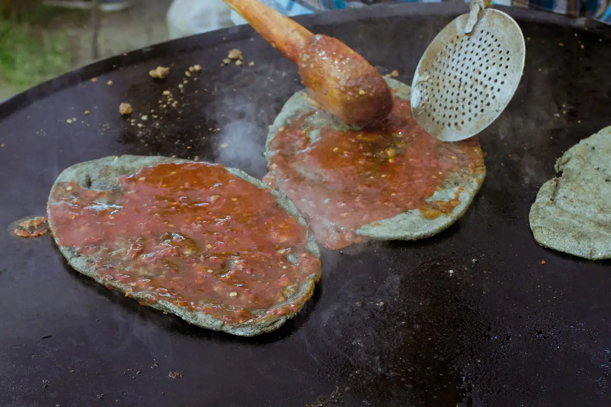

Food Oaxaca, Mexico
A market breakfast in Oaxaca
Hot chocolate, sweet bread and smoke-grilled meat: why Oaxaca's markets are the best place to start the day.

Oaxaca is often called the food capital of Mexico, and the markets are where you understand why. They open early, they are full of noise and steam, and breakfast there is better than anything a hotel can offer.
I went every morning for a week and still did not try everything.
Chocolate and bread
Start with a cup of hot chocolate made the local way, with water or milk and frothed by hand, and a piece of sweet egg bread to dip into it. The chocolate is ground with sugar and cinnamon at mills near the markets, and you can smell them from the street.
Order at the counter, sit on the bench and watch the market wake up around you.

The smoke corridor
In the 20 de Noviembre market there is a long, smoky hallway lined with grills. You buy raw meat from one stall, hand it to a cook, and it comes back grilled with onions and peppers. Then you buy tortillas, salsa and vegetables from the women walking past with baskets.
It sounds complicated, but everyone is patient with confused visitors. Just point, and pay as you go.
What to try next
Look for tlayudas, which are large, crisp tortillas with beans, cheese and meat, and mole, the rich sauces Oaxaca is famous for. The brave can try chapulines: toasted grasshoppers with lime and chilli. They taste mostly of lime and chilli.
Leave room for tejate, a cold, frothy drink made from maize and cacao, sold from big painted bowls.